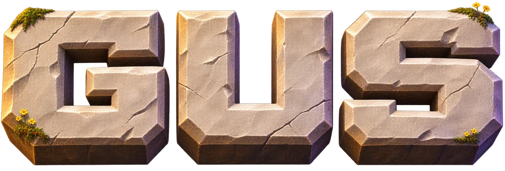

Chapter 1
The Village Attack
Defend the market and lead the villagers to refuge.
Available
The Iron GolemWhen raiders attack BlockHaven, Gus must defend his village and guide its people to safety.
Chapter 1
Defend the market and lead the villagers to refuge.
AvailableChapter 2
Cross the valley in search of a smith and new allies.
In developmentChapter 3
Follow the raiders to their stronghold.
In developmentIt’s market day in BlockHaven. Visit the stalls and check in with the watchkeeper by the lantern.
WASD or arrows to move. Drag to orbit the camera. E to talk, F to punch, Q to slam, Esc to pause.
Gus’s journey continues in the full campaign. · BlockHaven by Mr. Watford
Back to BlockHaven